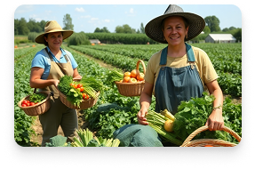
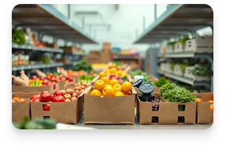

Kisah Panen Kami
Ikuti perjalanan produk organik dari benih hingga meja Anda
1
Penanaman Organik
Memulai dengan benih berkualitas tinggi dan tanah yang telah disiapkan secara organik tanpa pestisida kimia berbahaya.
2
Perawatan Alami
Menggunakan pupuk kompos alami dan metode pengendalian hama ramah lingkungan untuk menjaga kualitas tanaman.

3
Panen Berkualitas
Panen dilakukan pada waktu yang tepat untuk memastikan rasa dan nutrisi optimal dari setiap produk.

4
Pengemasan Ramah Lingkungan
Menggunakan kemasan biodegradable dan sustainable untuk menjaga kelestarian lingkungan.
